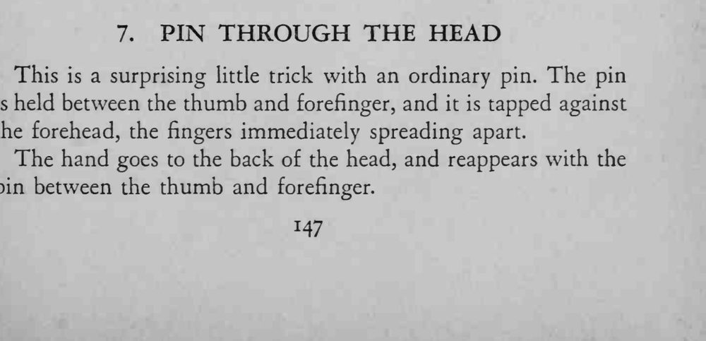
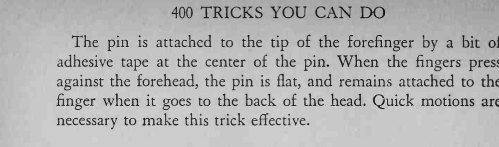

魔术师把别针往额头上一拍，手指随即张开，手绕到脑后，别针又出现在指间。
动作要快，胶布粘点要小，别让观众看清别针其实没进皮肤。


This is a surprising little trick with an ordinary pin. The pin is held between the thumb and forefinger, and it is tapped against the forehead, the fingers immediately spreading apart. The hand goes to the back of the head, and reappears with the pin between the thumb and forefinger. The pin is attached to the tip of the forefinger by a bit of adhesive tape at the center of the pin. When the fingers press against the forehead, the pin is flat, and remains attached to the finger when it goes to the back of the head. Quick motions are necessary to make this trick effective.